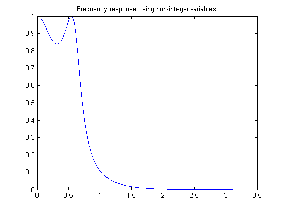
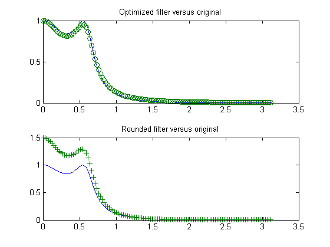

ミニマックス最適化
Optimization Toolbox™ を使用すると、非線形フィルターの設計問題を解くことができます。このデモを実行するには、Signal Processing Toolbox™ が必要なことに注意してください。
目次
有限精度パラメーターの設定
有限精度フィルターの設計の例を考えます。そのためには、フィルター設計パラメーター (カットオフ周波数や係数の数など) を指定するだけでは不十分です。設計が有限精度であるため、使用可能なビット数も指定しなければなりません。
nbits = 8; % How many bits have we to realize filter maxbin = 2^nbits-1; % Maximum number expressable in nbits bits n = 4; % Number of coefficients (order of filter plus 1) Wn = 0.2; % Cutoff frequency for filter Rp = 1.5; % Decibels of ripple in the passband w = 128; % Number of frequency points to take
まず連続設計
これは連続フィルター設計です。cheby1 を使用しますが、ellip、yulewalk、または remez を使用することもできます。
[b1,a1]=cheby1(n-1,Rp,Wn); [h,w]=freqz(b1,a1,w); % Frequency response h = abs(h); % Magnitude response plot(w, h) title('Frequency response using non-integer variables') x = [b1,a1]; % The design variables
フィルター係数の境界の設定
最大値と最小値に境界を設定します。
if (any(x < 0)) % If there are negative coefficients - must save room to use a sign bit % and therefore reduce maxbin maxbin = floor(maxbin/2); vlb = -maxbin * ones(1, 2*n)-1; vub = maxbin * ones(1, 2*n); else % otherwise, all positive vlb = zeros(1,2*n); vub = maxbin * ones(1, 2*n); end
係数のスケーリング
maxbin に等しい最大値を設定し、他のフィルター係数を適切にスケーリングします。
[m, mix] = max(abs(x)); factor = maxbin/m; x = factor * x; % Rescale other filter coefficients xorig = x; xmask = 1:2*n; % Remove the biggest value and the element that controls D.C. Gain % from the list of values that can be changed. xmask(mix) = []; nx = 2*n;
最適化基準の設定
OPTIMSET を使用して、終了基準を、実行時間が短くなるように適切な高い値に調整します。また、繰り返しごとに結果の表示をオンにします。
options = optimset('TolX',0.1,'TolFun',1e-4,'TolCon',1e-6,'Display','iter');
最大絶対値の最小化
最大絶対値を最小にしなければなりません。そのために、options.MinAbsMax を周波数点の数に設定します。
if length(w) == 1 options = optimset(options,'MinAbsMax',w); else options = optimset(options,'MinAbsMax',length(w)); end
最適化のための最初の値の削除
FMINIMAX を呼び出すことで、最初の値の離散化と削除を行い、最適化を実行します。
[x, xmask] = elimone(x, xmask, h, w, n, maxbin) niters = length(xmask); disp(sprintf('Performing %g stages of optimization.\n\n', niters)); for m = 1:niters disp(sprintf('Stage: %g \n', m)); x(xmask) = fminimax(@filtobj,x(xmask),[],[],[],[],vlb(xmask),vub(xmask), ... @filtcon,options,x,xmask,n,h,maxbin); [x, xmask] = elimone(x, xmask, h, w, n, maxbin) end
x =
Columns 1 through 7
0.5441 1.6323 1.6323 0.5441 57.1653 -127.0000 108.0000
Column 8
-33.8267
xmask =
1 2 3 4 5 8
Performing 6 stages of optimization.
Stage: 1
Objective Max Line search Directional
Iter F-count value constraint steplength derivative Procedure
0 8 0 0.00329174
1 17 0.0001845 3.34e-007 1 0.0143
Local minimum possible. Constraints satisfied.
fminimax stopped because the size of the current search direction is less than
twice the selected value of the step size tolerance and constraints were
satisfied to within the selected value of the constraint tolerance.
Stage: 2
Objective Max Line search Directional
Iter F-count value constraint steplength derivative Procedure
0 7 0 0.0414182
1 15 0.01649 0.0002558 1 0.261
2 23 0.01544 6.131e-007 1 -0.0282 Hessian modified
Local minimum possible. Constraints satisfied.
fminimax stopped because the size of the current search direction is less than
twice the selected value of the step size tolerance and constraints were
satisfied to within the selected value of the constraint tolerance.
Stage: 3
Objective Max Line search Directional
Iter F-count value constraint steplength derivative Procedure
0 6 0 0.0716961
1 13 0.05943 -3.862e-012 1 0.776
Local minimum possible. Constraints satisfied.
fminimax stopped because the size of the current search direction is less than
twice the selected value of the step size tolerance and constraints were
satisfied to within the selected value of the constraint tolerance.
Stage: 4
Objective Max Line search Directional
Iter F-count value constraint steplength derivative Procedure
0 5 0 0.129938
1 11 0.04278 4.144e-010 1 0.183
Local minimum possible. Constraints satisfied.
fminimax stopped because the size of the current search direction is less than
twice the selected value of the step size tolerance and constraints were
satisfied to within the selected value of the constraint tolerance.
Stage: 5
Objective Max Line search Directional
Iter F-count value constraint steplength derivative Procedure
0 4 0 0.0901749
1 9 0.03867 -1.739e-010 1 0.256
Local minimum possible. Constraints satisfied.
fminimax stopped because the size of the current search direction is less than
twice the selected value of the step size tolerance and constraints were
satisfied to within the selected value of the constraint tolerance.
Stage: 6
Objective Max Line search Directional
Iter F-count value constraint steplength derivative Procedure
0 3 0 0.11283
1 7 0.05033 -1.388e-017 1 0.197
Local minimum possible. Constraints satisfied.
fminimax stopped because the size of the current search direction is less than
twice the selected value of the step size tolerance and constraints were
satisfied to within the selected value of the constraint tolerance.
最も近い整数値のチェック
最も近い値によってフィルターの機能が向上するかどうか確認します。
xold = x; xmask = 1:2*n; xmask([n+1, mix]) = []; x = x + 0.5; for i = xmask [x, xmask] = elimone(x, xmask, h, w, n, maxbin); end xmask = 1:2*n; xmask([n+1, mix]) = []; x= x - 0.5; for i = xmask [x, xmask] = elimone(x, xmask, h, w, n, maxbin); end if any(abs(x) > maxbin) x = xold; end
周波数応答の比較
まず、フィルターの周波数応答をプロットし、そのフィルターを、係数が切り上げまたは切り捨てられるフィルターと比較します。
subplot(211) bo = x(1:n); ao = x(n+1:2*n); h2 = abs(freqz(bo,ao,128)); plot(w,h,w,h2,'o') title('Optimized filter versus original') xround = round(xorig) b = xround(1:n); a = xround(n+1:2*n); h3 = abs(freqz(b,a,128)); subplot(212) plot(w,h,w,h3,'+') title('Rounded filter versus original') set(gcf,'NextPlot','replace')
xround =
1 2 2 1 57 -127 108 -34
